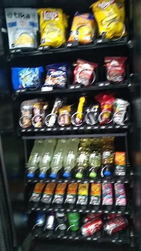
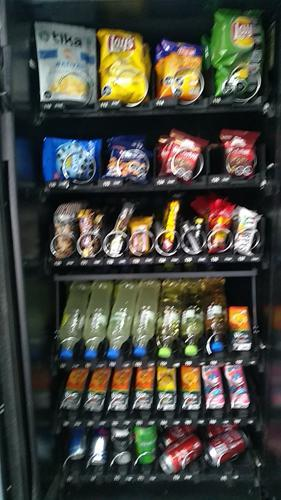

Antes de AbastecerNo se detectaron espirales vacios.

id 412.793 |
Luego de AbastecerNo se detectaron espirales vacios.

id 412.794 |
|
| Fecha |
Reporte |
Vacios ANT |
% Abast |
% Quiebre |
Sum QTY |
Rotación Diaria |
Abast hace (días) |
| 16-08-2021 |
Viendo |
0 |
2.0 |
- |
6 |
- |
7 |
| 09-08-2021 |
Ver |
1 |
5.3 |
2.5 |
16 |
2 |
7 |
| 02-08-2021 |
Ver |
0 |
28.9 |
- |
88 |
12 |
7 |
| 26-07-2021 |
Ver |
0 |
15.1 |
- |
46 |
6 |
7 |
| 19-07-2021 |
Ver |
0 |
3.9 |
- |
12 |
1 |
7 |
| 12-07-2021 |
Ver |
0 |
2.0 |
- |
6 |
- |
7 |
|
|
|
Se abasteció la máquina con:
Total de 6 unidades de 1 productos.
| Qty. |
Producto |
SubFamilia |
Familia |
| 6 |
Papas Mediterraneas Orega |
Snack |
Snack |
| Productos más abastecidos en últimas 6 semanas:
| Nro. Abast |
Qty/Abast |
Producto |
Abast hace (días) |
Fecha |
| 4 |
9 |
Super Ocho Clasico 24 Gr |
14 |
02-08-2021 |
| 3 |
5 |
Papas Nativas Andina Tika |
7 |
09-08-2021 |
| 2 |
20 |
Negrita 20 Gr |
14 |
02-08-2021 |
| 2 |
14 |
Mani Japones De La Rosa 4 |
21 |
26-07-2021 |
| 2 |
12 |
Brownie Nutrabien Display |
21 |
26-07-2021 |
| Productos menos abastecidos en últimas 6 semanas:
| Nro. Abast |
Qty/Abast |
Producto |
Abast hace (días) |
Fecha |
| 1 |
6 |
Papas Mediterraneas Orega |
0 |
16-08-2021 |
| 1 |
10 |
Papas Fritas Lays Evercri |
7 |
09-08-2021 |
| 2 |
6 |
De Todito Ii Cheetos Eve |
42 |
05-07-2021 |
| 2 |
6 |
Alfajor Bon O Bon Dos En |
28 |
19-07-2021 |
| 2 |
6 |
Alfajor Blanco Bon O Bon |
35 |
12-07-2021 |
|
|